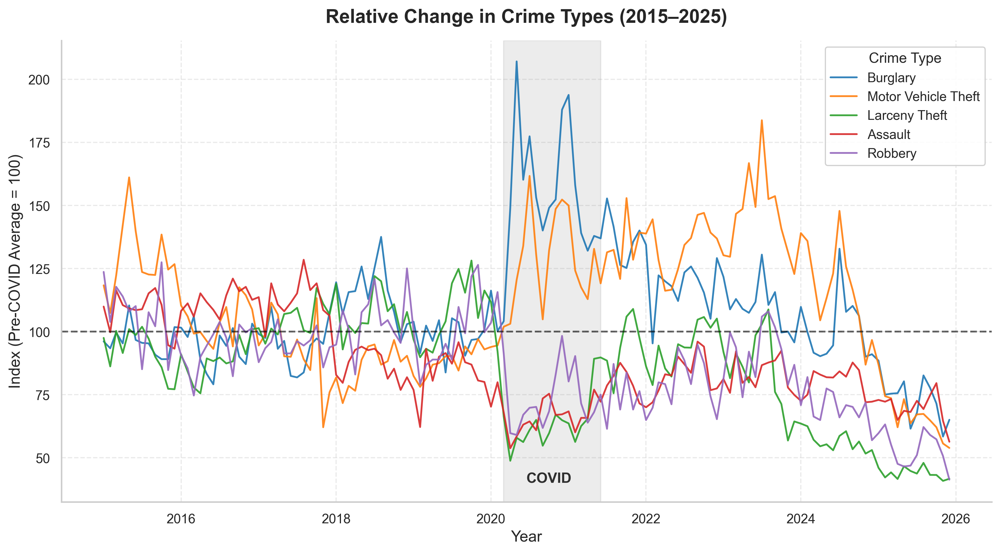

A Decade of Incident Reports
This analysis draws on the San Francisco Police Department's publicly available incident report database, which spans ten years of recorded crime activity from 2015 to 2025. The dataset is one of the most comprehensive municipal crime records in the United States, capturing everything from petty theft to violent offenses across all official police districts in the city.
Each record in the dataset includes the incident category, date and time of occurrence, the police district it was reported in, and geographic coordinates. This richness makes it possible to analyze not just how much crime occurs, but where it clusters and when it tends to happen — both critical dimensions for understanding behavioral patterns.
"Crime data does not simply tell us where danger lives — it reveals the invisible rhythms of a city."
To keep the analysis focused, we spotlight burglary as a category of particular interest. Unlike violent crime, burglary is highly sensitive to environmental factors: the density of targets, the presence of foot traffic, seasonal patterns, and economic conditions. Tracking burglary over time and space therefore offers a nuanced lens through which broader urban dynamics become visible.
Three Things the Data Shows
Before diving into the visualizations, here is a high-level synthesis of the patterns that emerge most clearly from the data.
Total incident counts have dropped compared to the pre-COVID baseline, suggesting that broad safety trends are moving in a positive direction across San Francisco as a whole.
Despite the aggregate decline, burglary is increasing in localized areas. This divergence highlights that crime is not disappearing uniformly — it is shifting geographically.
Burglary incidents concentrate in narrow time windows throughout the day, revealing behavioral patterns that are consistent and potentially actionable for prevention strategies.
Exploring the Patterns
The three figures below present the data at increasing levels of granularity — from the ten-year macro trend, down to the district level, and finally to the hour of day.
Total crime versus burglary, plotted annually from 2015 to 2025.

The first thing to notice is the broad downward slope after 2019. The COVID-19 pandemic disrupted patterns across every dimension of city life, and crime was no exception. What is more revealing, however, is what happened after restrictions lifted: while total crime continued declining, burglary held steady or ticked upward in certain years.
Tekst — [Uddybning af hvad der konkret sker i grafen: nævn specifikke årstal, vendepunkter og statistiske udviklinger]
An interactive heatmap showing the spatial concentration of burglary incidents across San Francisco's police districts.
The geographic picture is striking. Rather than spreading evenly across the city, burglary clusters persistently in a small number of districts. This concentration is not simply a reflection of population density — some of the highest-activity zones are commercial or mixed-use areas where foot traffic is high but residential density is modest.
Tekst — [Nævn hvilke distrikter der har de højeste rater, og diskuter mulige forklaringer: bystruktur, demografi, patruljering eller økonomi]
Tekst — [Har den geografiske fordeling ændret sig over tid? Er nye hotspots opstået efter 2020?]
Burglary incidents broken down by hour of day, revealing a structured and predictable rhythm.
Perhaps the most operationally useful finding in the dataset is the strong temporal signal in burglary timing. Rather than occurring randomly throughout the day, incidents cluster in identifiable windows. This is consistent with research showing that burglars — particularly residential burglars — behave according to predictable routines that track occupancy and visibility patterns.
Tekst — [Beskriv præcist hvilke tidspunkter der topper, og om mønsteret varierer på hverdage vs. weekender eller på tværs af distrikter]
What This Means for the City
The aggregate decline in San Francisco crime is a genuinely positive signal. But it risks obscuring a more complex picture. Burglary tells a different story from the headline numbers: one of geographic concentration and temporal predictability that aggregate statistics cannot capture.
This matters for policy. Broad city-wide crime reduction programs may be effective at the macro level, but they may fail to address the specific conditions enabling burglary in high-concentration districts. The patterns identified here suggest that targeted, time-aware and place-based interventions could yield meaningful improvements where general approaches fall short.
Tekst — [Afsluttende perspektiv: hvad bør fremtidig forskning eller byplanlæggere fokusere på baseret på disse fund?]